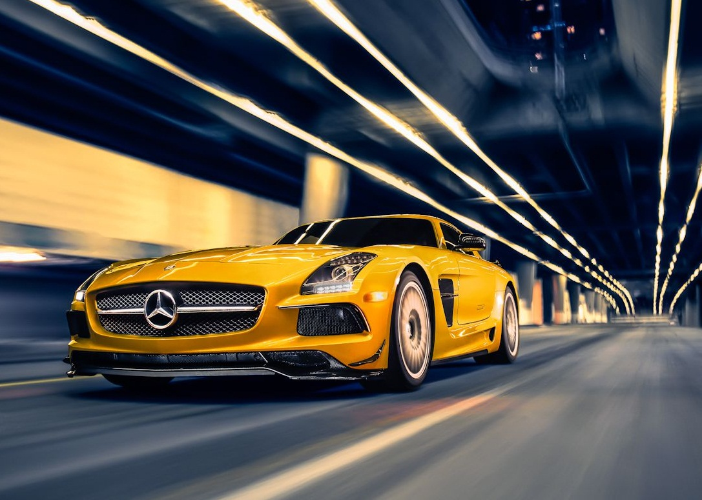
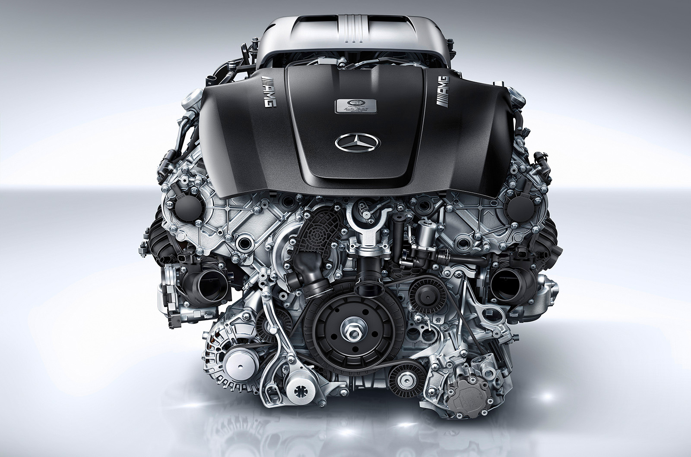
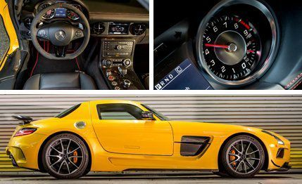
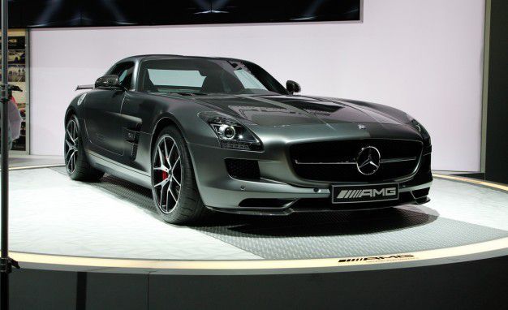
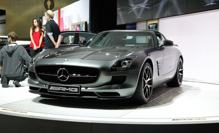
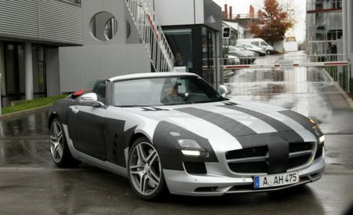

SUPER CAR SUPER BUILD

Mercedes Benz SLS AMG
Engine & Transmission

| Top Speed | 317km/hr |
| Acceleration (0-100 kmpl) | 3.8 Seconds |
| Engine Displacement CC | 6208 |
| Max Power | 420bhp@6800rpm |
| Max Torque | 650Nm@4750rpm |
| Engine Description | V8,Petrol Engine |
| Turning Radius | 5.9 meters |
| No. of Cylinders | 8 |
| Drive Type | AWD |
| Turbo Charger | No |
| Super Charger | Yes |
| Valves Per Cylinder | 8 |
| Compression Ratio | 11.3:1 |
| Fuel Supply System | |
| Gear Box | 7Gears |
| Steering Gear Type | Power assisted rack & pinion |



